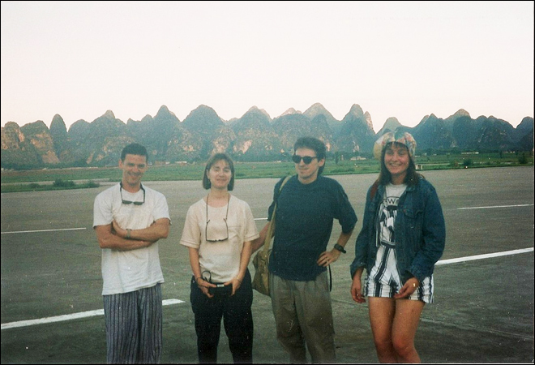
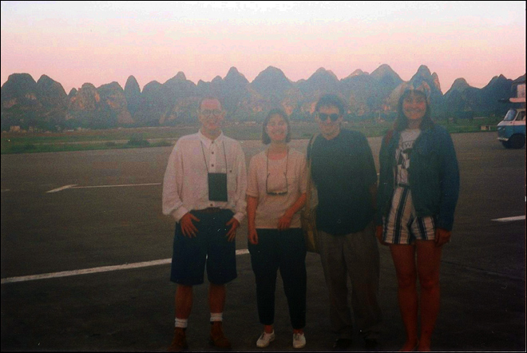
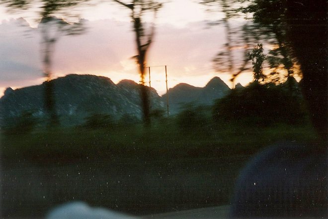
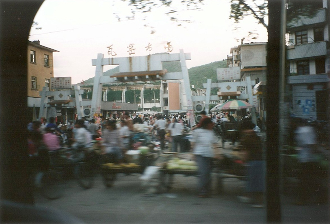
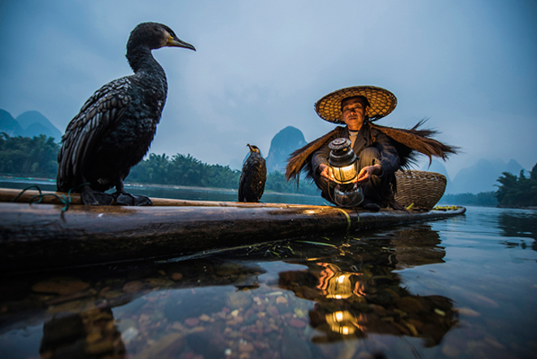
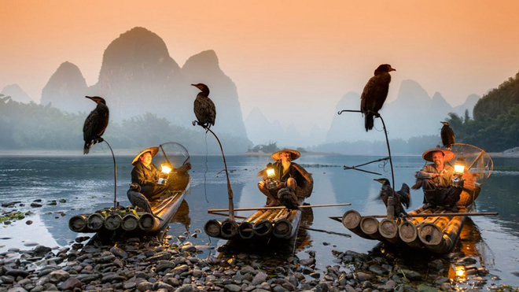
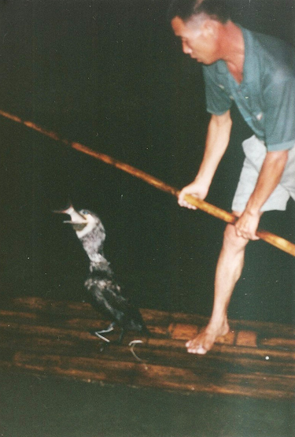
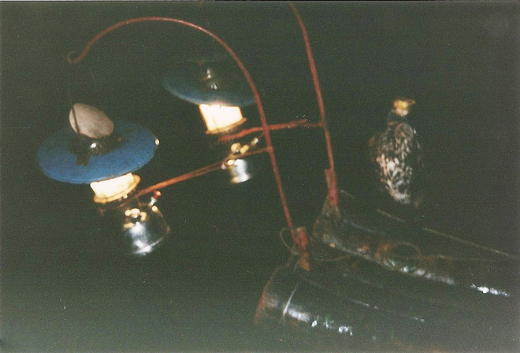
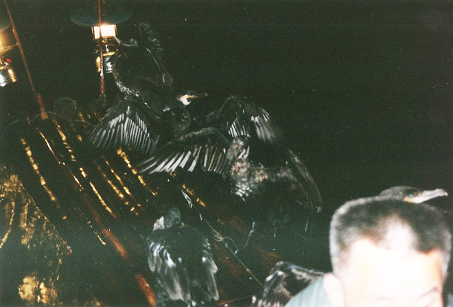
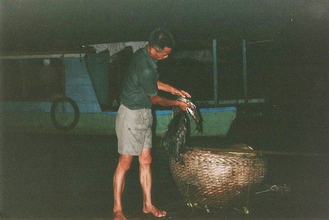

.
Situated on the west bank of the Li River, Guilin has long been renowned for its scenery of karst topography. Its name means "Forest of Sweet Osmanthus", owing to the large number of fragrant sweet osmanthus trees located in the region.
One of China's most popular tourist destinations, it has the epithet - By water, by mountains, most lovely, Guilin - associated with the city.

After a gruelling flight south from Beijing to Guilin (with possibly the worst air turbulence I have experienced), we landed in Guilin. Almost on the Vietnam border, the humidity was astonishing as can be seen by the fuzziness of these photos on the tarmac. The light also dropped very quickly.








